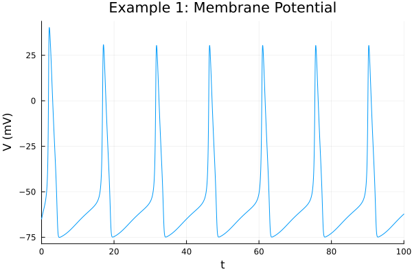
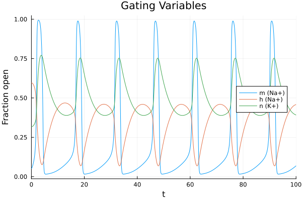
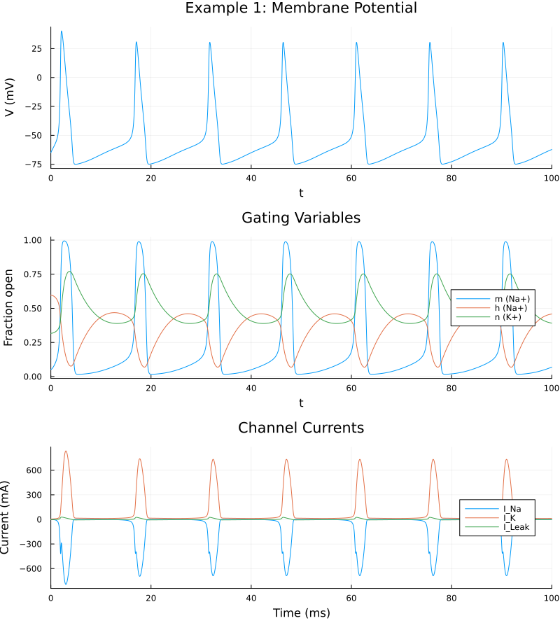

Example 1: Building a Single-Compartment Hodgkin-Huxley Neuron from Scratch
This example introduces the core acausal electrical primitives of MTKNeuralToolkit. We'll use a GateSpec helper to quickly make customisable ion channels and hook them up to run a hodgkin huxley neuron. Note that the next example builds the ion channels from first principles, which is barely any harder.
using MTKNeuralToolkit
using ModelingToolkit: mtkcompile, @named, t_nounits as t
using OrdinaryDiffEq
using Plots1. Define Ion Channel Gating Dynamics
We use the standard Hodgkin-Huxley formulations (Dayan & Abbott) where $V_{\text{rest}} = -65 \text{ mV}$. Here, we return the alpha and beta rates as a tuple.
hh_na_m = v -> (
0.1 .* (v .+ 40.0) ./ (1.0 .- exp.(-(v .+ 40.0) ./ 10.0)), #alpha_m
4.0 .* exp.(-(v .+ 65.0) ./ 18.0) #beta_h
)
hh_na_h = v -> (
0.07 .* exp.(-(v .+ 65.0) ./ 20.0), #alpha_h
1.0 ./ (1.0 .+ exp.(-(v .+ 35.0) ./ 10.0)) #beta_h
)#5 (generic function with 1 method)Defining Gating Dynamics: Alpha/Beta vs. Infinity/Tau
There are two common ways to define gating dynamics.
Method 1: Alpha/Beta Formulation
hh_k_n_ab = v -> (
0.01 .* (v .+ 55.0) ./ (1.0 .- exp.(-(v .+ 55.0) ./ 10.0)), #alpha_n
0.125 .* exp.(-(v .+ 65.0) ./ 80.0) #beta_n
)#8 (generic function with 1 method)Method 2: Infinity/Tau Formulation (using the InfTau helper)
Instead of writing out the alpha/beta functions, you might only have the steady-state (inf) and time constant (tau) curves. MTKNeuralToolkit provides the InfTau helper to convert these into the internal alpha/beta formulation:
\[\alpha = \frac{\text{inf}}{\tau} \quad \text{and} \quad \beta = \frac{1 - \text{inf}}{\tau}\]
Here, we define n_inf and tau_n mathematically equivalent to Method 1 so you can see how it maps over:
n_alpha(v) = 0.01 .* (v .+ 55.0) ./ (1.0 .- exp.(-(v .+ 55.0) ./ 10.0))
n_beta(v) = 0.125 .* exp.(-(v .+ 65.0) ./ 80.0)
n_inf(v) = n_alpha(v) ./ (n_alpha(v) .+ n_beta(v))
tau_n(v) = 1.0 ./ (n_alpha(v) .+ n_beta(v))
hh_k_n_inftau = InfTau(n_inf, tau_n)#InfTau##0 (generic function with 1 method)2. Define Gate Specifications
At $V = -65 \text{ mV}$, the steady-state values for the gates are:
\[m = 0.052\]
\[h = 0.596\]
\[n = 0.317\]
sodium_gates = [
GateSpec(:m, 3, 0.052, hh_na_m),
GateSpec(:h, 1, 0.596, hh_na_h)
]2-element Vector{GateSpec{Int64, Float64}}:
GateSpec{Int64, Float64, Main.var"#2#3"}(:m, 3, 0.052, Main.var"#2#3"())
GateSpec{Int64, Float64, Main.var"#5#6"}(:h, 1, 0.596, Main.var"#5#6"())We're using the InfTau formulation (hh_k_n_inftau) here to show how it works, but swapping it for hh_k_n_ab (the alpha/beta version) gives you the exact same dynamics.
We name the K gate n_gate instead of just n to avoid a namespace clash with the negative electrical pin n in MTK's OnePort.
potassium_gates = [
GateSpec(:n_gate, 4, 0.317, hh_k_n_inftau)
]1-element Vector{GateSpec{Int64, Float64, MTKNeuralToolkit.var"#InfTau##0#InfTau##1"{typeof(Main.n_inf), typeof(Main.tau_n)}}}:
GateSpec{Int64, Float64, MTKNeuralToolkit.var"#InfTau##0#InfTau##1"{typeof(Main.n_inf), typeof(Main.tau_n)}}(:n_gate, 4, 0.317, MTKNeuralToolkit.var"#InfTau##0#InfTau##1"{typeof(Main.n_inf), typeof(Main.tau_n)}(Main.n_inf, Main.tau_n))3. Build the Electrical Components
First, we instantiate the capacitor and our ion channels. When you pass a GateSpec array to GenericChannel, it creates the ODEs for the gating variables and connects the acausal OnePort for you.
top = Scalar() #Define a single-neuron topology
@named soma_cap = Capacitor(topology=top, C=1.0)
@named na_ch = GenericChannel(topology=top, g=120.0, E_rev=50.0, gates=sodium_gates)
@named k_ch = GenericChannel(topology=top, g=36.0, E_rev=-77.0, gates=potassium_gates)
@named leak = GenericChannel(topology=top, g=0.3, E_rev=-54.4, gates=GateSpec[]) #No gates = pure leakModel leak:
Subsystems (2): see hierarchy(leak)
p
n
Equations (6):
4 standard: see equations(leak)
2 connecting: see equations(expand_connections(leak))
Unknowns (6): see unknowns(leak)
v(t)
i(t)
p₊v(t)
p₊i(t)
⋮
Parameters (2): see parameters(leak)
g
E_rev4. Assemble the Compartment
build_compartment connects all the positive pins to the membrane voltage, grounds the negative pins, and wires up the injected currents. It returns a Compartment struct containing the MTK System and its exposed interfaces.
channels = [na_ch, k_ch, leak]
soma = build_compartment(soma_cap, channels;
name=:soma,
V_init=-65.0,
topology=top)Compartment{NoMorphology, NoGeometry, Float64}(Model soma:
Subsystems (8): see hierarchy(soma)
soma_cap
injector
syn_injector
p
⋮
Equations (52):
36 standard: see equations(soma)
16 connecting: see equations(expand_connections(soma))
Unknowns (51): see unknowns(soma)
soma_cap₊v(t)
soma_cap₊i(t)
soma_cap₊p₊v(t)
soma_cap₊p₊i(t)
⋮
Parameters (7): see parameters(soma)
soma_cap₊C
na_ch₊g
na_ch₊E_rev
k_ch₊g
⋮, (V = soma₊soma_cap₊v(t), p_pin = Model soma₊p:
Equations (2):
2 connecting: see equations(expand_connections(soma₊p))
Unknowns (2): see unknowns(soma₊p)
v(t)
i(t), n_pin = Model soma₊n:
Equations (2):
2 connecting: see equations(expand_connections(soma₊n))
Unknowns (2): see unknowns(soma₊n)
v(t)
i(t), I_ext = soma₊injector₊I₊u(t), I_syn = soma₊syn_injector₊I₊u(t), cap_name = :soma_cap), -65.0, Scalar(), NoGeometry(), NoMorphology())5. Build and Simulate the Network
A single neuron is just a network with one node. We'll drive it with a constant 10.0 mA current injection and solve it. Later examples make the simple extension of driving with time-varying currents.
The first time you run this, Julia has to JIT-compile the symbolic system and the differential equation solver. This might take 10-30 seconds. Subsequent runs, or tweaking parameters and re-running, will be much faster.
drivers = [(1, 10.0)] #(Index 1, Current 10.0)
net = build_acausal_network([soma]; drivers=drivers, name=:single_neuron)
println("Compiling single compartment...")
sys = mtkcompile(net.sys)
prob = ODEProblem(sys, [], (0.0, 100.0))
println("Solving...")
sol = solve(prob, Rosenbrock23(), reltol=1e-4, abstol=1e-4)retcode: Success
Interpolation: specialized 2nd order "free" stiffness-aware interpolation
t: 1012-element Vector{Float64}:
0.0
0.0027972568976161946
0.03076172498138774
0.058726193065159284
0.1167583374225888
0.17522945185429917
0.2682307816431597
0.3639087632841167
0.49315353796144035
0.6259400342679826
⋮
96.88984048947411
97.28801197684685
97.698386061536
98.11955162516752
98.55050778948971
98.98965992397903
99.43564455275767
99.88664790938796
100.0
u: 1012-element Vector{Vector{Float64}}:
[-65.0, 0.052, 0.596, 0.317]
[-64.97212502204817, 0.05201196745346801, 0.5959998795071929, 0.3170004563150646]
[-64.69613271045334, 0.052230394520027965, 0.5959811635934653, 0.3170169656349425]
[-64.424773830801, 0.05261486564276356, 0.5959307257743733, 0.31705505334384954]
[-63.87489622630855, 0.05385576776600093, 0.5957261360278754, 0.31720165087824]
[-63.336819653672705, 0.055608856885070376, 0.5953846634890926, 0.3174400750270217]
[-62.50784490201686, 0.059185878755576626, 0.594565297797898, 0.3180019942366329]
[-61.681032561745276, 0.06365855644005033, 0.5933691706295204, 0.31880955631423125]
[-60.588197762884114, 0.0706818303965279, 0.5911822456416843, 0.3202626200117986]
[-59.46766319697299, 0.07893956639772828, 0.5882317016261976, 0.32218867850318234]
⋮
[-68.5066268376907, 0.03306453126650696, 0.3962546846577928, 0.44803098916863465]
[-67.66668505260323, 0.03654093921658505, 0.4100013683602004, 0.43593649362271447]
[-66.80041597069473, 0.0404969136670891, 0.4222125344557415, 0.42515012672304237]
[-65.92016328910853, 0.04493842911656312, 0.43277582218348626, 0.41575585441990065]
[-65.03661374290861, 0.0498623411497671, 0.4416220075666413, 0.4077937983494573]
[-64.15966766337417, 0.0552488007561663, 0.4486998632989559, 0.40128270995181764]
[-63.29575871412492, 0.06107599617241655, 0.45399378973205073, 0.3962052048811343]
[-62.44850344383962, 0.06732081413386515, 0.4575099200210591, 0.39252221987021224]
[-62.23815112049001, 0.06896239398008502, 0.45811240807694553, 0.3918142022710701]6. Plot the Results
Since MTKNeuralToolkit is built on ModelingToolkit, every variable in the system (gating states, alpha/beta rates, local channel currents) is a named symbolic variable. You don't need custom logging callbacks to observe them; you just access them via the compiled system's namespace.
6a. Plot the main membrane voltage
p1 = plot(sol, idxs=[sys.soma.soma_cap.v],
title="Example 1: Membrane Potential",
ylabel="V (mV)", legend=false)
6b. Plot the internal HH gating variables (m, h, n)
Here we reach into the sodium channel (na_ch) and potassium channel (k_ch) components we created back in Step 3.
p2 = plot(sol, idxs=[sys.soma.na_ch.m, sys.soma.na_ch.h, sys.soma.k_ch.n_gate],
title="Gating Variables",
labels=["m (Na+)" "h (Na+)" "n (K+)"],
ylabel="Fraction open", legend=:right)
6c. Plot the individual currents flowing through each channel
p3 = plot(sol, idxs=[sys.soma.na_ch.i, sys.soma.k_ch.i, sys.soma.leak.i],
title="Channel Currents",
labels=["I_Na" "I_K" "I_Leak"],
ylabel="Current (mA)", xlabel="Time (ms)", legend=:right)
plot(p1, p2, p3, layout=(3,1), size=(800, 900))
This page was generated using Literate.jl.